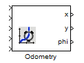

Odometry

Robotino's odometry data can be read and set using the simulink block. Odometry information is provided in the form of X, Y and Phi.
Contents
Block properties
Inputs
- ComId
- Set - set true (1) to set the odometry values, set false (0) for otherwise.
- x, set - the global x position in mm.
- y, set - the global y position in mm.
- phi, set - the global phi position in degrees.
Outputs
- x - the global x position in mm.
- y - the global y position in mm.
- phi - the global phi position in degrees.